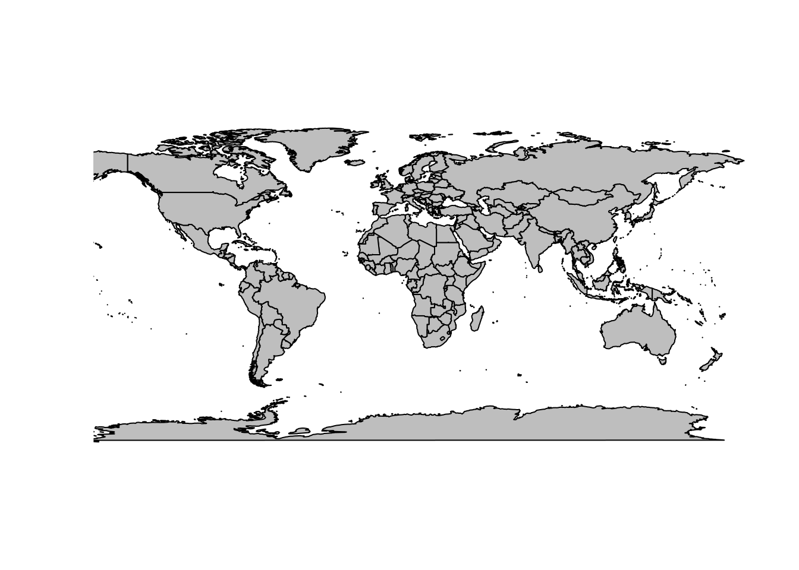
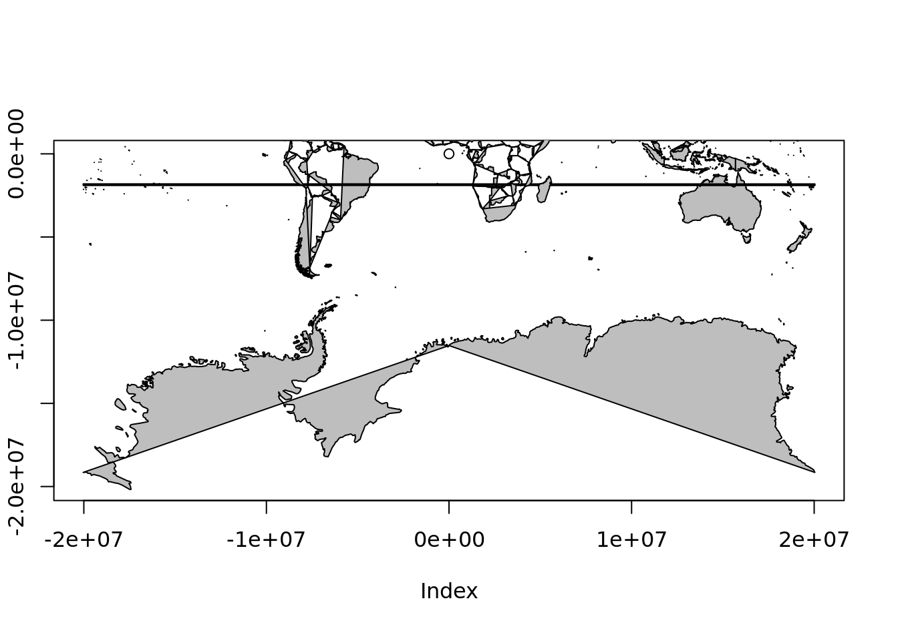

- 1 About this
- 2 Description and objectives
- 3 Getting Set Up
- 4 Mapping in R
- 5 Let’s use the maps data!
- 6 Reprojecting to polar regions
- 7 Demonstration of the projection concept
- 8 Data handling in polar regions
- 9 Overlay between different projections
- 10 Build an index betweeen the raw raster data and the polar map regions
- 11 SOmap
- 12 Circumpolar maps
- 13 Adding points
5 Let’s use the maps data!
In maps_c we have the maps data structure, and this looks promising.
## List of 4
## $ x : num [1:82403] -69.9 -69.9 -69.9 -70 -70.1 ...
## $ y : num [1:82403] 12.5 12.4 12.4 12.5 12.5 ...
## $ range: num [1:4] -180 190.3 -85.2 83.6
## $ names: chr [1:1627] "Aruba" "Afghanistan" "Angola" "Angola:Cabinda" ...
## - attr(*, "class")= chr "map"mp <- maps_c
pxy <- rgdal::project(lonlat, "+proj=laea +lat_0=-90 +datum=WGS84")
mp$x <- pxy[,1]
mp$y <- pxy[,2]
mp$range <- c(range(mp$x,na.rm = TRUE), range(mp$y, na.rm = TRUE))
mp$range## [1] -12709814 12704237 -12576156 12470787
## but it doesn't take much to go awry
plot(c(-1, 1) * f, c(-1, 1) * f, type = "n", asp = 1)
maps::map(mp, add = TRUE, fill = TRUE, col = "grey")
The problem is that the maps database has enough internal structure to join lines correctly, with NA gaps between different connected linestrings, but not enough to draw these things as polygons. A similar problem occurs in the default projection. While wrld_simpl has been extend by placing two dummy coordinates at the east and west versions of the south pole, this data set does not have those.
We have to look quite carefully to understand what is happening, but this is wrapping around overlapping itself and so close to the southern bound we barely notice.
plot(0, type = "n", axes = FALSE, xlab = "", ylab = "", xlim = c(-180, -110), ylim = c(-90, -60))
rect(xleft = -180, ybottom = -90, xright = 180, ytop = 90, border = "darkred", lwd = 4, lty = 2)
maps::map(add = TRUE,col = "grey", fill = TRUE)

mpmerc <- maps_c
pxy <- rgdal::project(lonlat, "+proj=merc +datum=WGS84")
mpmerc$x <- pxy[,1]
mpmerc$y <- pxy[,2]
mpmerc$range <- c(range(mpmerc$x,na.rm = TRUE), range(mpmerc$y, na.rm = TRUE))
mpmerc$range## [1] -20037508 20037508 -20179524 18351859## the catastrophe made a little clearer
plot(0, xlim = range(mpmerc$range[1:2]), ylim = c(mpmerc$range[1], 0))
maps::map(mpmerc, fill = TRUE, col = "grey", add = TRUE)